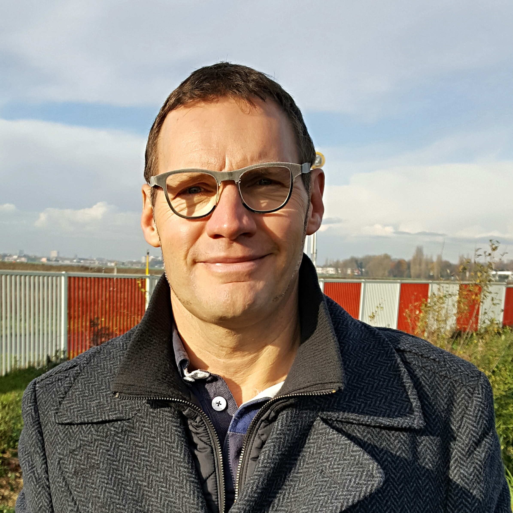

Bio
Werner DE VOS studeerde af als Burgerlijk Ingenieur Werktuigkunde-Elektrotechniek aan de VUB.
Vooraleer hij van start ging met COGITANDUS, heeft hij gedurende meer dan 25 jaar een brede ervaring opgedaan binnen de domeinen veiligheid, kwaliteit en milieu als manager op groepsniveau in diverse industrieën bij bedrijven die wereldwijd actief zijn.
Dat ging van het uittekenen van de strategie over het coachen van internationale teams bij de implementatie op de werkvloer tot het invoeren en auditen van ISO/OHSAS & VCA-managementsystemen en het realiseren van continue verbetering.